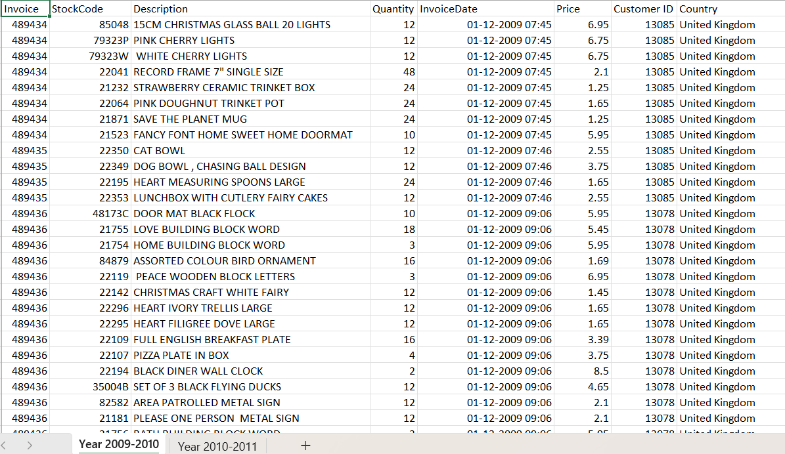
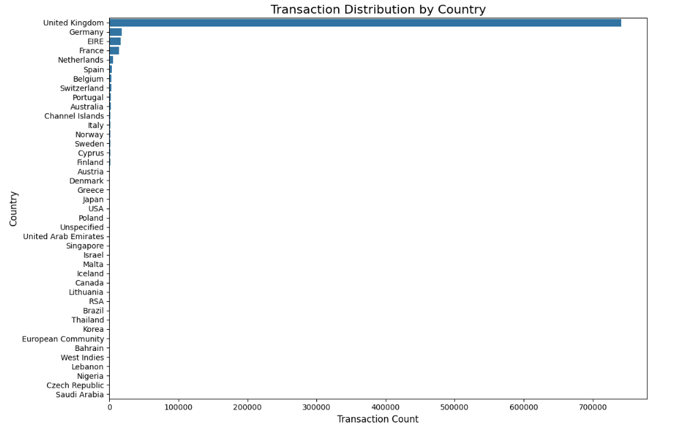
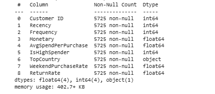
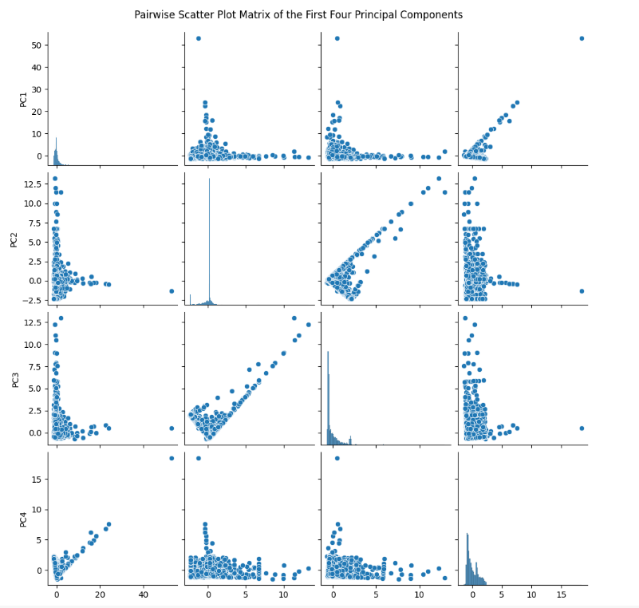

DBSCAN Clustering
This section breaks down how DBSCAN was applied to customer segmentation. Below you'll find tiles for code snippets, charts, and tabular data.
You can find the code in this link: Source Code
Data Source The dataset containing online retail transactions from 2009 to 2011. It includes customer purchases, product details, invoice dates, quantities, and pricing information.
Glimpse of data
Data Cleaning We cleaned the data by removing missing entries, dropping invalid records like negative quantities, and ensuring proper data types for dates and numerical columns. This helped maintain data integrity for accurate analysis.
Data Preprocessing We engineered new features like Total sales, Hour, DayOfWeek, Month and Year are created from existing columns. We also created an RFM (Recency, Frequency, Monetary) table and applied scaling to prepare the data for clustering models like KMeans and DBSCAN.
Transaction by country
Top 10 customers

Top 10 customers(Removed Outliers)
Removed outlier using IQR(Interquartile range). It is a measure of statistical dispersion, describing the spread of the middle 50% of a dataset. It's calculated as the difference between the third quartile(Q3) which is the upper bound and the first quartile(Q1) which is the lower bound of the data. Data points that fall outside these bounds (either above the upper bound or below the lower bound) are considered potential outliers.
#Apply IQR After Aggregating by Customer
# Step 1: Aggregate total spending per customer
customer_spending = df_clean.groupby('Customer ID')['TotalPrice'].sum()
# Step 2: Apply IQR to the aggregated totals
Q1 = customer_spending.quantile(0.25)
Q3 = customer_spending.quantile(0.75)
IQR = Q3 - Q1
lower_bound = Q1 - 1.5 * IQR
upper_bound = Q3 + 1.5 * IQR
# Step 3: Filter out customers with extreme total spend
customer_spending_clean = customer_spending[(customer_spending >= lower_bound) & (customer_spending <= upper_bound)]

Initial Feature Selection
Finalized Features
1. To avoid skewed data dropped Top Country
2. To avoid high correlation data with Monetary dropped AverageSpendPerPurchase
3. Dropped IsHighSpender due to binary value
features_to_scale = ['Recency', 'Frequency', 'Monetary', 'WeekendPurchaseRate', 'ReturnRate']
#Standard Scaler
standard_scaler = StandardScaler()
rfm_standard_scaled = standard_scaler.fit_transform(rfm[features_to_scale])
4. Did Principal Component Analysis(PCA) on top Scaled(Standard Scaler) data dropped Return rate due to very less contribution
# Apply PCA to reduce the dataset to 2 components
pca = PCA(n_components=4)
X_pca = pca.fit_transform(rfm_standard_scaled)
# Variance explained by each principal component
print("Explained Variance Ratio:", pca.explained_variance_ratio_)
print("Total Variance Explained:", np.sum(pca.explained_variance_ratio_))
Explained Variance Ratio: [0.39302084 0.21309313 0.18738906 0.17496266]
Total Variance Explained: 0.9684656897010425

K Distance graph
Plotted the K-distance graph using min_samples = 8—determined using a stricter heuristic of 2 × number of dimensions—to identify a suitable range of epsilon values for clustering.
# Choose your value of k (usually same as min_samples)
k = 4 # Common rule of thumb: min_samples = number of dimensions + 1
# Fit NearestNeighbors on your PCA-transformed data
neigh = NearestNeighbors(n_neighbors=k)
nbrs = neigh.fit(X_pca) # assuming X_pca is your PCA-transformed data
# Find the k-distance for each point
distances, indices = nbrs.kneighbors(X_pca)
Evaluate Silhouette Score
eps_values = [0.5, 0.6, 0.7, 0.8, 0.9]
for eps in eps_values:
db = DBSCAN(eps=eps, min_samples=8)
labels = db.fit_predict(X_pca)
n_clusters = len(set(labels)) - (1 if -1 in labels else 0)
if n_clusters > 1:
score = silhouette_score(X_pca, labels)
print(f"eps: {eps}, clusters: {n_clusters}, silhouette: {score:.2f}")
else:
print(f"eps: {eps}, too few clusters")
eps: 0.5, clusters: 2, silhouette: 0.62
eps: 0.6, clusters: 2, silhouette: 0.50
eps: 0.7, clusters: 2, silhouette: 0.71
eps: 0.8, clusters: 2, silhouette: 0.75
eps: 0.9, clusters: 2, silhouette: 0.75
DBScan clusters
dbscan = DBSCAN(eps=0.8, min_samples=8)
rfm['DBSCAN_Cluster'] = dbscan.fit_predict(X_pca)